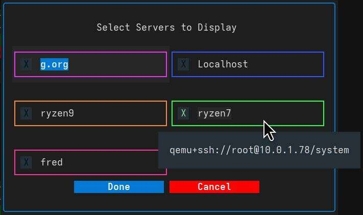

Management Main Window¶
The Management Main Window is the central hub of VirtUI Manager, designed for efficiency and rapid control of your virtual infrastructure.

Interface Overview¶
Note
You can view the application logs at any time by pressing the v key. This is useful for monitoring background operations and troubleshooting.
The interface is divided into intuitive sections to streamline your workflow:
Server Management¶
Located at the top-left, these tools control your connection contexts:
- Select Servers (
s): Switch the "Single Pane of Glass" view to specific servers (local or remote SSH). - Manage Servers: Add, remove, or edit the list of available Libvirt connections.
- Server Prefs: Configure connection details, auto-connect behaviors, and default storage/network pools for new VMs.
Server List & Navigation¶
The core view displaying your virtual machines. 
- Card View: Each VM is represented as a card showing real-time status, CPU/Memory usage sparklines, and IP addresses.
- Compact View (
k): Toggles a high-density view showing only selection, name, and status. Ideal for managing large numbers of VMs or when screen space is limited. - Interaction:
- Double-Click Name: Triggers a background fetch of full VM data (in detailed view only).
- Sparkline Click: Toggles between Resource View (CPU/Memory) and I/O View (Disk/Network) performance metrics.
- Navigation: Use Arrow Keys to move focus.
- Pagination: Use Left/Right buttons or keys (when focused) to navigate pages of VMs.
Filtering & Search (f)¶
Press f or click the Filter VM button to narrow down the list.
- Search Text: Filter by VM name.
- Status: Show only Running, Stopped, or Paused VMs.
- Server Scope: Limit the view to specific servers from your active connection list.
VM Provisioning (i)¶
Press i to launch the VM Installation Wizard.
- Guided Setup: Select target server, ISO image (local or remote), and allocate resources (CPU, RAM, Disk).
- Defaults: Uses the defaults defined in Server Prefs to speed up deployment.
Bulk CMD (b)¶
The "Bulk Command" mode puts the power of fleet management at your fingertips.
- Multi-Select: Manually select cards or use
Ctrl+a(Select All) /Ctrl+u(Unselect All). - Pattern Selection (
p): Select VMs based on name patterns (regex/glob). - Mass Actions: Perform operations like
Start,Shutdown,Reboot, orDeleteon all selected VMs simultaneously.
Advanced Tools¶
- Virsh Shell (
Ctrl+v): Opens a direct shell to runvirshcommands against a selected server. - Stats Logging (
Ctrl+l): Toggles background logging of performance statistics to the log file. When enabled, logs detailed libvirt call statistics and cache performance every 10 seconds. - Cache Stats (
Ctrl+s): Displays internal cache hit/miss statistics for debugging. Shows detailed information about VM data caching efficiency.
Keyboard Shortcuts Cheat Sheet¶
| Key | Action |
|---|---|
s |
Select Servers |
f |
Filter View |
i |
Install New VM |
k |
Toggle Compact View |
b |
Bulk Command Mode |
p |
Pattern Select |
v |
View Application Log |
c |
Open App Configuration |
Ctrl+a |
Select All Visible VMs |
Ctrl+u |
Unselect All VMs |
Up Arrow |
Filter: Show Running VMs Only |
Down Arrow |
Filter: Show All VMs |
Left Arrow |
Previous Page |
Right Arrow |
Next Page |
Ctrl+v |
Open Virsh Shell |
Ctrl+l |
Toggle Statistics Logging |
Ctrl+s |
Show Cache Statistics |
q |
Quit Application |